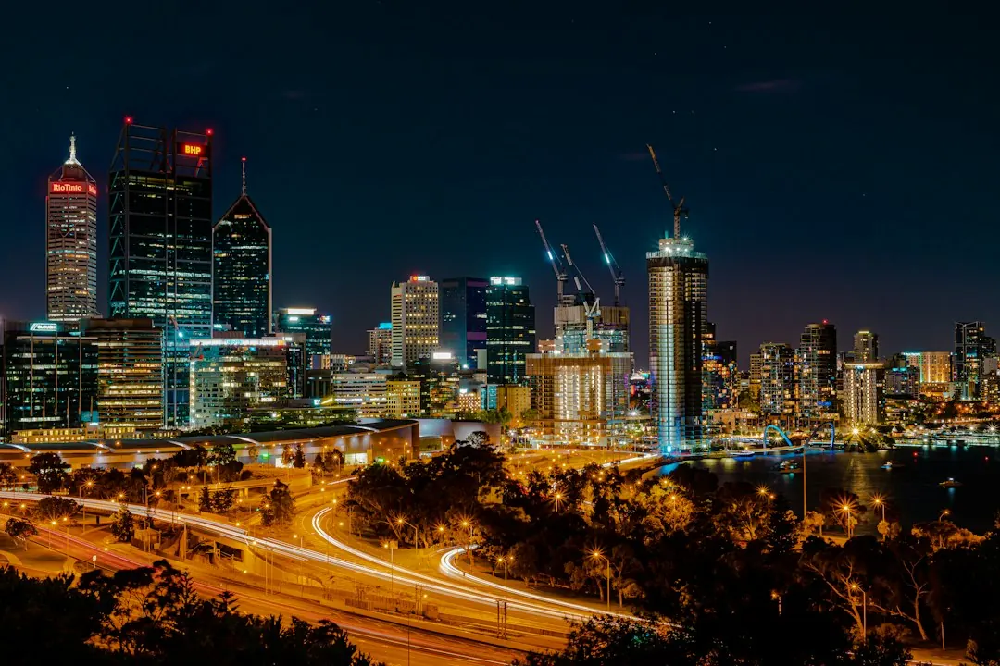

For a Perth home, a switchboard upgrade is usually considered when power keeps tripping, ceramic fuses remain, safety switches are missing, or new equipment needs more capacity. The published price guide says a standard home typically costs $800 to $2,500 as at October 2026. A written quote should identify circuit numbers, board condition, RCD requirements, possible asbestos-panel work and whether Western Power must disconnect the supply.
For homeowners comparing electrical switchboard upgrades perth options, the practical decision is whether the existing board needs targeted repairs or a complete replacement, and what the quote should include.
Electrical Switchboard Upgrades Perth Explained
Switchboard Upgrades Perth describes repeated tripping, unexplained power loss at night and old ceramic fuses as common reasons to arrange an assessment. Those symptoms do not automatically mean the whole board must be replaced. A licensed electrician can inspect the board, test circuits and explain whether the job is a repair, a partial improvement or a new installation.
Look for the details that affect the decision: how many circuits are present, whether each circuit can be identified, whether RCDs are installed, and whether the board has spare room. A single faulty breaker may lead to a narrower repair. Ceramic fuses, no RCDs or a crowded board may point towards replacement, subject to the electrician's inspection.
- Write down which circuit trips and when it happens.
- Photograph the board before requesting a quote.
- List planned additions such as solar, air conditioning or an EV charger.
What the upgrade changes
A modern board replaces old fuses or crowded breakers with circuit breakers, safety switches and clear labels. RCDs are designed to cut power quickly when current leaks to earth, reducing the risk of a serious shock. Labelling matters in everyday use because it makes it easier to identify the relevant circuit when a fault occurs.
Capacity for future work should be discussed before the quote is accepted. The published service information specifically mentions solar, air conditioning, EV charging and extra circuits as reasons to leave room for later additions. That does not mean every property needs the same board size. Ask what spare capacity is included, which circuits are being moved, and whether any existing wiring needs repair.
If a meter box is involved, ask whether the work reaches the supply side of the installation. The electrician can explain whether Western Power needs to cut the supply before work starts.
Price signals to check in a written quote
The published guide gives a standard Perth home price range of $800 to $2,500 as at October 2026. It also explains that board size, circuit count and the condition of wiring affect the final figure. A few safety switches may cost less than a full new board, but the correct comparison is between quotes that describe the same work.
Before approving the job, check whether the quote identifies:
- the number of circuit breakers and RCDs to be installed;
- removal or replacement of an old ceramic-fuse arrangement;
- new labels and any testing included;
- meter-box work or possible Western Power coordination;
- assessment or replacement of an older backing panel; and
- the treatment of solar, air conditioning, EV charging or other planned loads.
A clear scope makes it easier to see whether a lower price excludes an item that another quote includes.
When selling, leasing or renovating
The decision can change when a property is being sold or newly leased. The published Perth guidance states that a WA home sold or newly leased needs at least two RCDs protecting its power and lighting circuits. An older board may have none, so the owner should ask the electrician to confirm what is present and what the property requires.
Older switchboards may have cement-sheet backing panels that contain asbestos. The electrician can explain how the panel will be assessed and whether replacing it is included in the quote. This is a separate scope question from installing breakers and safety switches, and it should be settled before work begins.
Renovators should provide the proposed electrical changes early. A board that has room for extra circuits can be easier to plan around than one already crowded, but the electrician still needs to confirm the actual circuit and wiring requirements.
Who this applies to and what happens next
This guide is relevant to homeowners with repeated tripping, ceramic fuses, missing RCDs, a crowded board, planned electrical additions, or a property being sold or newly leased. It is also relevant to landlords and agents who need a quote that clearly separates the board work from any wiring, asbestos-panel or meter-box issue.
- Describe the problem. Note the symptoms, existing equipment and planned changes.
- Arrange an inspection. The electrician checks the board and tests the circuits.
- Compare the scope. Confirm whether the recommendation is repair, partial work or replacement.
- Plan the outage. Power is off while the old board is removed and the new one is wired in, although the duration depends on the job.
- Keep the paperwork. In Western Australia, electrical work must be completed by a person holding the appropriate electrical licence, and an electrical safety certificate is owed within 28 days after installation work.
A practical Perth location question
The published service area includes Perth suburbs such as Northbridge, East Perth, West Perth, Subiaco, Victoria Park and Maylands, along with other nearby locations. Rather than choosing on suburb alone, ask whether the electrician has allowed for the property's access, existing meter arrangement, circuit count and any work planned nearby.
For a home, rental or renovation, the most useful next step is a written description of the existing board and the work expected. That gives the electrician enough context to explain the likely scope, identify questions for the site visit and provide a price before work starts.
- Record the symptoms. Note when power trips, which circuits are affected and whether the issue happens at night or during particular use.
- Prepare the site information. Tell the electrician about the property's board, access, planned solar, air conditioning, EV charging or extra circuits.
- Review the written quote. Check the board type, circuit count, RCDs, labels, possible panel work, outage planning and certificate arrangements.
- Retain the certificate. Keep the electrical safety certificate issued after installation work for future property records.
| Situation | Likely discussion | Quote question |
|---|---|---|
| One faulty breaker or limited fault | Targeted repair may be considered after testing | Which circuit is affected and what testing is included? |
| Ceramic fuses, no RCDs or no spare room | A new board may be recommended | How many breakers, RCDs and spare spaces are included? |
| Meter-box, asbestos-panel or supply-side work | Additional site and coordination requirements may apply | Is this item included, and could Western Power need to disconnect supply? |
Common questions
How much does a switchboard upgrade cost in Perth? The published guide gives a typical standard-home range of $800 to $2,500 as at October 2026. Board size, circuit count and wiring condition affect the final price, so a written quote is needed.
How long will the work take? The electrician can provide a timeframe after inspecting the board. It depends on the number of circuits being moved and whether wiring needs repair.
Will the power be off all day? Not necessarily. Power is off while the old board is removed and the replacement is wired, then it comes back on. The electrician can discuss timing around refrigeration or working from home.
What does a good quote include? It should explain whether the job is a repair or replacement, identify breakers and RCDs, describe labels and testing, and state whether meter-box, asbestos-panel or supply-side work is included.
This guide covers Perth switchboard assessment, repair-versus-replacement decisions, quote inputs, RCDs, meter-box questions and post-installation paperwork.